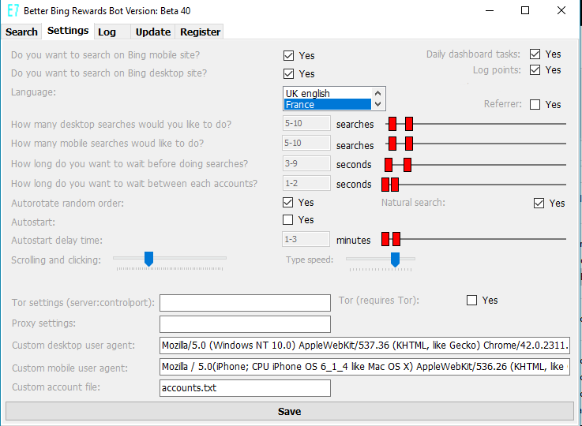

[If you have any question you can ask here, mirror 1 (a
Reddit profile is required!)]
Better Microsoft Rewards Bot
1. What is it and what does it do?
Better Microsoft Rewards Bot is the best professional automation tool to earn Microsoft points while searching Bing. Period.
1.2. Features
- Supports maximize income: earns daily dashboard tasks and all quizzes, 3-5 question style, multiple-choice and drag and drop quiz.
- Supports external file with exported url rewards!
- Supports track current account and ip.
- Supports Australia, France, Germany, U.K.
- Supports autostart with Windows task scheduler.
- Supports migrate old settings.
- Supports custom Windows controls in setting tabs.
- Supports random order or sorteed list of accounts in autorotate.
- Supports log: Settings, ip, score, balance, errorlog and export log to text file.
- Supports stealthier individual proxy settings for each account.
- Supports faster check earned Microsoft points.
- Supports faster auto skip temporarily suspended accounts.
- Supports stealthier custom desktop and mobile user agent.
- Supports multiple accounts: auto rotate through all accounts. A text file with the credentials is required.
- Supports auto and manual mode for auto and manual searches.
- Supports an individual wordlist. A text file is required.
- Supports multithreading (requires multiple Windows users).
- Supports Tor (Proxy settings and Identity switcher).
- Supports free Ip2location lite database.
Download free database, Mirror 1!
- Supports custom searches in desktop and mobile version of Bing.
- Stealthier: the bot switches between desktop and mobile version.
- Stealthier: Random sleep delay: Set a random time delay "5-10" to wait between searches.
- Stealthier: Random searches count: Set a random number of searches "30-50" for searches.
- Stealthier: Random sleep between authentification "2-5" minutes to wait between accounts.
- Stealthier: Simulate real user in all searches random click in searches.
- Shows earned Microsoft points for each searches.
- Faster: Stop searches when all points are earned.
- Maximize income: repeat searches until all points are earned (ignores searches count up to 2x)
1.2.4 Main tab (Searches)

Buttons: A=Manually authenticate, I=New identity, C=Clear cache
1.2.5 Settings tab

1.2.6 Logtab (shows earns points per account and used ip-addresses if used with tor)
In main screen navigate to log tab:

1.2.7 Update tab

2. Requirements
-Windows 10
-accounts.txt file
-words.txt file
-Microsoft Microsoft Rewards account
[If you have any question you can ask here, mirror 1 (a
Reddit profile is required!)]
3. [[IMPORTANT INFORMATION]]
3.1. Windows internet connection requires you to navigate to the settings tab and to unselect the Tor-checkbox and leave the tor settings and proxy
setting fields empty!
Example settings Windows internet connection:

4. Installation
Download Better Microsoft Rewards Bot. Double-click bbrb.exe and edit settings to match your search. Download free location spoofing binary file from here:ip-country-region-city-latitude-longitude-zipcode-timezone, Mirror 1 to
the main folder.
5. Tutorial
5.1 Create accounts.txt file to match your accounts.
New accounts are separated by newline. For instance user@mail.com/password.
5.2 Custom proxies
- In accounts.txt file add the proxy separated by space after account: user@mail.com/pwd 127.0.0.1:8080
5.3 Custom user agent for desktop searches
- In accounts.txt file add the custom user agent with quotes and separated by space after the account credentials:user@mail.com/pwd "myuseragent" or after the custom proxy:user@mail.com/pwd 127.0.0.1:8080 "myuseragent"
5.4 Create or edit words.txt file to match your searches.
New words are separated by newline. Words.txt file is required.
5.5 Copy accounts.txt and words.txt file to the main folder of the program
5.6 Double-click the exe
5.7. Navigate to "Settings" tab and edit the default settings to match your searches.
5.7.1 The bot needs:
- 1. Windows internet connection (delete proxy settings and un-select Tor)
- 2. proxy settings
- 3. Tor
5.8. Start searches
5.8.1 If Autorotate is enabled go to "Search" tab and click the "Start" button
5.8.2 If Autorotate is disabled go to "Search" tab and select the account with + and - buttons and press A-button then press Start-button.
5.9. Browser url bar
5.9.1 The browser url bar supports special commands. Type the following commands:
5.9.2 "geolocation": Finds the users geolocation (navigate to iplocation.net)
5.9.3 "bingr": Navigate to Microsoft Rewards homepage
5.9.4 "mobile": Change user agent to mobile bing version
5.9.5 "desktop:" Change user agent to desktop bing version
5.9.6 "bing": Navigate to Bing homepage version
5.9.7 "login": Navigate to Microsoft Live login
5.10 Autorotate
Better Microsoft Rewards bot supports multiple accounts. Tick the checkbox to allow auto rotate between
all accounts during the searches. In addition untick this when you want to start searches for a specific account.
5.11 Manual mode
The "-" and "+" button lets you specify an account and the "A"-button let you manually log into Microsoft Rewards. Uncheck the "Autorotate" button and press the "Start" button to start a search with this account.
6. Url reward file
The bot looks automatically for a text file in the main folder with the filename urlrws[month].txt with url rewards links and fixes the region, navigate (earn) and track the rewards. For example for March it's urlrws3.txt and for April it's urlrws4.txt etc. The bot supports normal url rewards and quizzes.
Example file:
https://click.email.microsoftrewards.com/?qs=82710ecfb8c00d0f7a258d434da7a380e5c593a95b4923af4d6efaf42f16212819c65cf62e960bcb0dd63a03697f8507a84567838c1427a4
https://click.email.microsoftrewards.com/?qs=9f3869a166783f2ad4ab256051dfc17ba892b57093b59a415988f057d6b8942bd8b3f52f94adc5c3e040413db3c0a4ae6b3ed86fa0685c35
7. Troubleshooting
7.1 Windows may requires .net framework v4, Mirror 1 and vc redist 2015, Mirror 1
7.2 Delete all settings file in C:/User/Username/AppData/Local/E7.
7.3 If the bot doesn't start delete points.sqlite in the app folder.
7.4 Run the bot as adminstrator.
7.5 Post/send me a dump with process monitor.
7.6 Post/send me the event viewer application error details and summary.
7.7 Ask in reddit!
7.8 Post/send me a video!
8. Changelog
01.04.2018 Update: Update v73: Better login, better stealth, many bugfixes, new button R for manually reset the tracking of all accounts of the current month of the url reward file.
27.03.2018 Update v72: Fixed edge bonus pt, Fixed 4 and 5 question quiz, add support for all quizzes and drag and drop, Fixed url reward file, many small bugfixes, Fixed log in.
24.03.2018 Update v71: fix edge bonus desktop searches, fix dashboard, support for 4-question quiz!
23.03.2018 Update v70: support for 5-question drag and drop quiz in the url reward file!
22.03.2018 Update v69: fixed dashboard with 0 quizzes and dailies. Fixed quizzes loop.
17.03.2018 Update v68: Many minor bugfixes, new log monthly score.
15.03.2018 Update v67: Fixed a lot of issues with the quizzes. Fixed credits calculations! Full support for all 3-questions style and quizzes and also the drag and drop quiz! Supports external file with exported url rewards!
05.03.2018 Update v66: supports for edge bonus quiz and multiple choice quiz
03.03.2018 Update v65: Level 1 and quizzes detection with a threshold.
18.02.2018 Update v64: add cookie to log.
11.02.2018 Update v63: fix multithread and stability issues, new error log and new dashboard.
27.01.2018 Update v60 minor fix new dashboard (quiz).
25.01.2018 Update v59: fix new dashboard, browser mode, utc offset.
15.01.2018 Update v58: fix settings&log type speed and LVL1&LVL2 detection.
07.01.2018 Update v57: supports Canada.
04.01.2018 Update v56: utc offset fixed.
28.12.2017 Update v55: fix browser config command.
27.12.2017 Update v54: fix new dashboard.
26.12.2017 Update: auto start fix.
18.12.2017 Update: stability fix, auto start fix, new option auto close.
09.12.2017 Update: log export to file
03.12.2017 Update: log tab shows total balance of the account
25.10.2017 Bugfix dashboard & login
21.10.2017 Update: stability fixes and support for custom user agents
07.10.2017 Update: bugfixes UI exception main thread and dashboard tasks
03.09.2017 Update: bugfixes and stability. New function: detects LVL1 and LVL2 accounts!
21.08.2017 New version 0.40. Improved stealth and speed.
03.07.2017 Supports Australia, U.K., France, Germany (unsupport India)
20.05.2017 Bugfix minimize (toolbar threadsafe)
28.04.2017 Bugfix invalid cast exception
24.04.2017 Bugfix login
20.04.2017 Supports Australia
16.04.2017 Bugfix login and language settings
10.04.2017 Bugfix application settings and ip echo
02.04.2017 Update application settings
29.03.2017 Bugfix custom proxies
27.03.2017 Bugfix autorotate and autostart. Bugfix threadsafe textbox.
23.03.2017 Update dashboard
28.12.2016 Custom Windows controls in settings tab.
21.12.2016 Bugfix authenticate
14.12.2016 X-mas edition. Faster searches, better authenticate, lower resources, bugfixes, new features: random order and update, bugfixes.
24.11.2016 Bugfix Logtab
23.11.2016 Bugfix points.sql exception
22.11.2016 Bugfix skip suspended accounts
20.11.2016 Bugfix auto start/auto authenticate. New feature log tab.
04.11.2016 Bugfix authenticate
02.11.2016 Bugfix random number generator
26.10.2016 Bugfix Popup 2:max!
23.10.2016 Bugfix authentication
21.10.2016 Bugfix mobile searches continues and threadsafe toolstriplabel
19.10.2016 bugfix System.Convert
16.10.2016 fixed authenticate and autorotate!
12.10.2016 fixed search and MS points!
07.07.2016 Update ip2locaton lite database support!
25.06.2016 bugfix Windows internet connection
14.05.2016 bugfix auto-skip
18.03.2016 bugfixes, dashboard tasks, check earned Microsoft points, auto skip
10.02.2016 bugfixes, new custom desktop & mobile user agent
25.01.2016 fix autorotate, new dashboard tasks, fix errors
20.12.2015 fix bugs, fix autorotate, fix clear cache&cookies
12.12.2015 Initial release
[If you have any question you can ask here, mirror 1 (a
Reddit profile is required!)]
8. Download
*Free version supports 1 accounts and desktop searches.